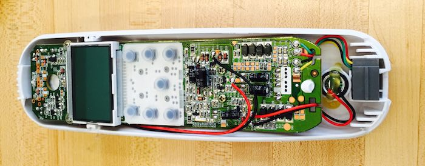
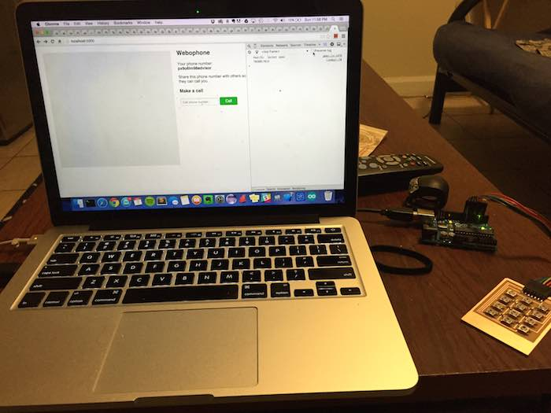
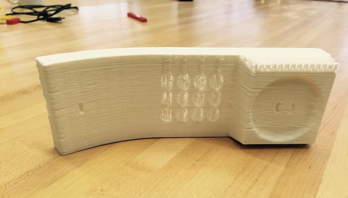
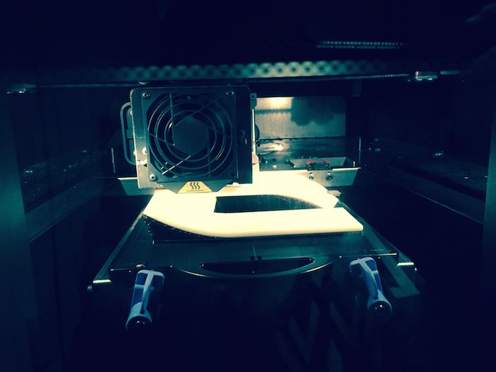
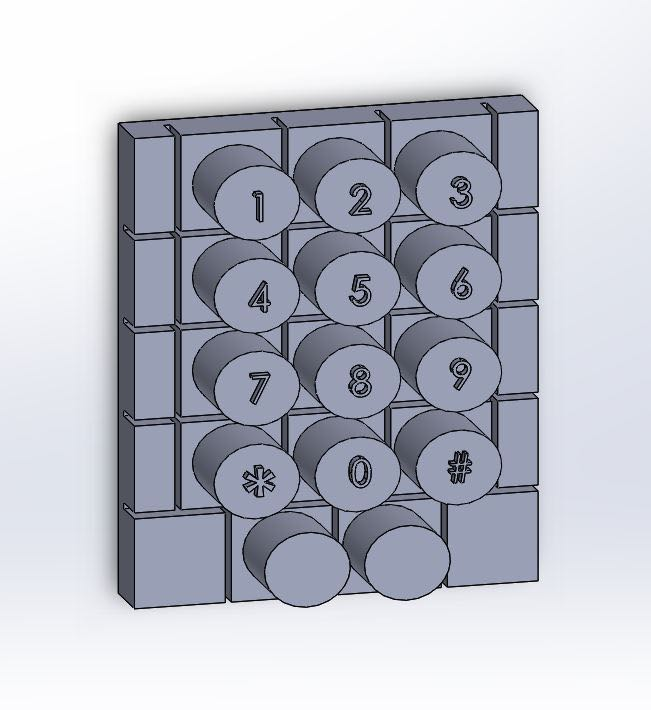
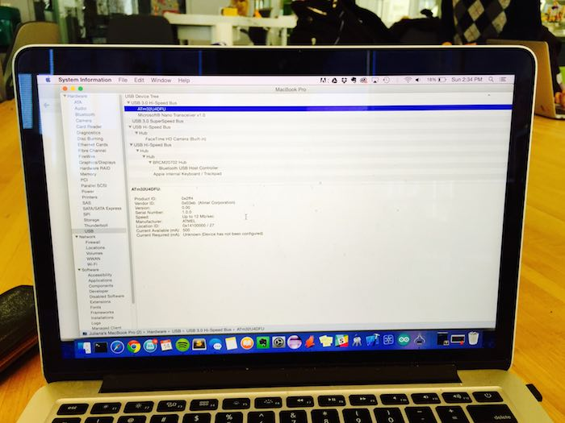

How to Make (Almost) Anything
For my How to Make (Almost) Anything final project, I decided to make a “phone-like” object that allows people to dial a number via Skype. The goal is to give this to my grandma as a holiday present, so that she can Skype with her brother in San Diego. Check out a video demo of the working phone:
Creating this working phone took me a good part of a week, and I have tried to document my process below.
More projects I made for this class can be found here.
Step 0: Buying an old landline phone
I have forgotten what corded landlines look like and how it feels to talk on one of them. My first step was to go to the hardware store in Central Square and buy a landline. The salesman at first didn’t understand why on earth I’d want a corded phone, then had to pull one out of storage and dust it off. But luckily I got a discount :)
I gutted the phone to understand how all the parts fit together. There was a speaker at the top and a microphone at the bottom, but of which I saved to reuse. I looked at the button-pressing mechanism and curvature of the phone shell as well, so that I could model my buttons and case off of these.

The inside of the old phone from the hardware store
Step 1: Making a keypad
The first step was to make a number pad, which is a type of matrix keypad (more info on how matrix keypads work can be found here). I made the schematic and board in Eagle, keeping in mind that I wanted to keep the same spacing between the push buttons as the old phone had between its buttons. Shown below is the latest version of the schematic, with two extra buttons for add-on functionality that I might do later (such as “hangup” and “redial”).
Since I made two iterations of this board: one without the additional buttons and one with them, below are pictures of making the first iteration of the board.
I tested this out by hooking up the Keypad to the digital i/o pins on an Arduino Uno and seeing if I could read numbers over serial. Below is a photo of reading numbers over serial and hooking that into example code for a WebRTC application running in the browser. On the console, you can see numbers from the keypad appear :)

Step 2: Designing and printing a phone shell
Next, I needed to create a phone-like shell for my device. I used SolidWorks to design the two pieces of the phone (front and back), shown below. The last image is a render of the phone assembly.
I first printed the phone’s front piece on a MakerBot, since it was quite a big piece and I wanted to make sure that I had my tolerances correct before printing it on the expensive Dimension printer in the shop.

From this print I found that I needed to adjust the tolerances around the buttons and the speaker port, since the components just barely fit. I also added more room for the cables to fit through at the bottom of the phone. Next, I printed on the dimension…

This took ~1 day to print and another day to soak in the lye bath. But, at the end I had a beautiful phone (which I totally forgot to take a picture of before I put components in it)… so I will show it later on this page.
Step 3: Wiring up the audio
I decided that I wanted to hook up the audio to the speaker/mic jack of my computer, independent of the keypad and micro controller. I took the old speaker and mic out of the phone, and cut an CTIA adapter out of an old pair of headphones, wiring them up together and placing an audio adapter cover over the joint. I glued the wires together with hot glue to add a professional touch :)
At the end of this, I had a really old-school set of headphones. I might have walked around playing music from my iPhone through a “corded phone line”.
Step 4: Molding and vinyl cutting the buttons
Now that I had the dimensions of the holes for the buttons, I then designed buttons that would hopefully work in SolidWorks.

From here, I machined these buttons in machinable wax on the Mini Shopbot.
And then created a silicone mold of the negative using Oomoo silicone and molded plastic into this mold. Below pictures show the process and one of the attempts at making buttons.
It turned out that I needed to add a lip of plastic material so that the buttons wouldn’t fall straight out of the holes when the phone was turned upside down. After making these buttons, I had to do a lot of sanding to ensure that they would not get stuck in the holes. As part of the sanding process, the numbers that were molded into the buttons were sanded off, so I then vinyl cut new numbers (which are shown in the picture of the final prototype at the bottom of the page).
Step 5: Having the keypad talk to a microcontroller
I then wanted to make the keypad emulate a keypad on the screen: when I type numbers into it, it produces a key press. The Arduino Leonardo has functionality to do this, so I modified a “Fab Leo” board to have the digital i/o output headers I needed and milled and stuffed the board… twice.
That moment when I saw the chip recognized at a USB device by the computer… captured on camera.

I burned the boot loader onto it so that the computer recognized it as an Arduino Leonardo, and then wired up the board to my keypad. When I typed on the keypad, it typed on the screen!
Step 6: Scripting a Skype user via keystrokes
When one of my labmates, Felix, heard about my project, he had mentioned that “every command on a computer is some sort of keystroke combination”. So I created a shortcut for opening up Skype on my computer, and simulated the key press via the Arduino. The idea of this is: when you plug in the phone, the phone automatically opens up Skype and the dial pad. Once you dial a number, it hits “call” automatically and the user hears a ring tone.
I did this through a sequence of keystrokes and timing delays. Here is the sudo code:
- Press Command + 1 to open Skype 2 Press Command + 2 to open Skype’s dial pad
- Wait for ten numbers to be press (i.e. a phone number)
- Tab 15 times and press enter to move the key selection from the keypad input to the “call” button and press it. You should hear a ringing tone.
- Wait until the person you called picks up. You should be able to hear them through the phone.
My Arduino code can be found here. And a probably more up to date version on Github here.
Here is the moment when it finally worked!
Thanks!
Thanks to Bianca Datta help troubleshooting the Makerbot, Palash Nandy for help troubleshooting the Arduino Leonardo, and Felix Heibeck for his suggestion to use keystrokes and supplying the ATMEGA32U4 chip.